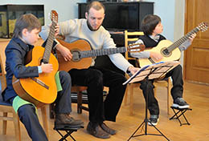
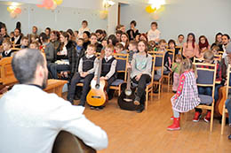
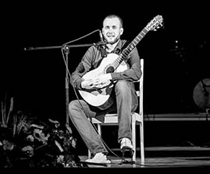
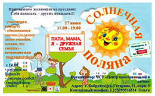

Клуб инициатив
Невежество и бездеятельность - вот истинные бичи многих народов и множества людей, причины, обрекающие их на жизненное прозябание и иисторическое небытиё.

вопрос.
Какое на ваш взгляд из направлений могло бы улучшить наше общество?
ответ
В каждом городе, на мой взгляд, должно быть место, где могли бы проводиться различные эксперименты, и,
если на малом количестве это привело к хорошему результату, то переносить на большие
габариты. Клуб инициатив
Клуб инициатив
вопрос.
Что вы можете предложить для того, чтобы общество, в котором ты в данный момент живешь, стало чуточку лучше?
ответ
Со своей стороны хочу предложить три больших направления, которые могли бы привнести определенное видение изменения общества, в котором я живу в лучшую сторону. Но это лишь мое субъективное мнение и оно может быть ошибочным, но поделиться могу. основные направления 
вопрос.
Могли бы вы поделиться вашим субъективным мнением о трех ваших направлениях.
ответ
Конечно, и для начало представлюсь. Меня зовут Андрей! Наверное из вас всех меня можно назвать самым большим эгоистом, так как со своей стороны помогаю чем могу всем тем, кто привносит разумные идеи по улучшению общества, в котором я живу. Все свои идеи я описываю в моем виртуальном проекте. Это сайт, на котором будет размещаться три больших направления, О которых я сегодня расскажу в общих чертах и по ссылкам вы можете увидеть Главная , что уже есть:
-  Это размещение проектов различных людей по улучшению общества, в котором я живу.
-
 Это размещение моего процесса обучения и написание, пособия по пошаговому сочинению музыки и объединению теории, гармонии,
сольфеджио на своем инструменте в интересных пошаговых заданиях для детей и не только.
Это размещение моего процесса обучения и написание, пособия по пошаговому сочинению музыки и объединению теории, гармонии,
сольфеджио на своем инструменте в интересных пошаговых заданиях для детей и не только. - Это развития программирования (сайто-строение) для осуществления задуманного